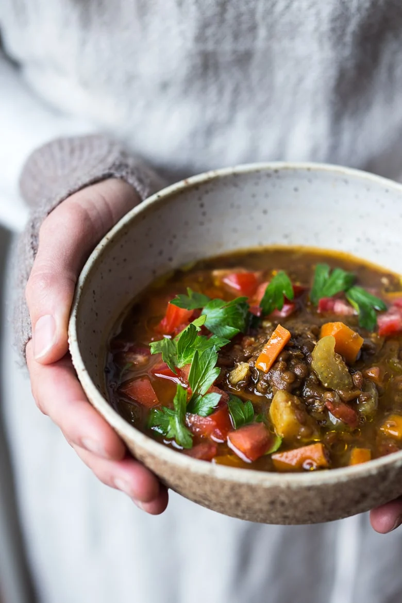
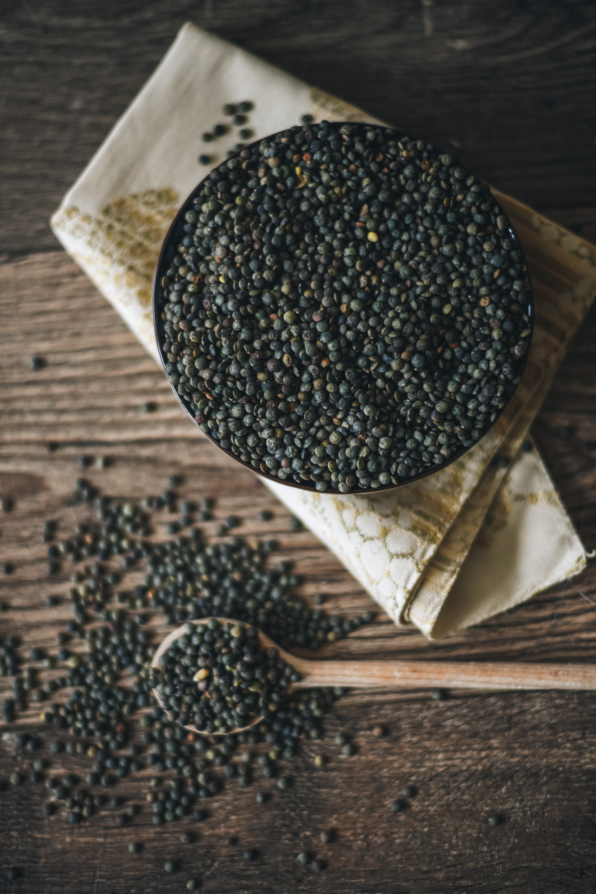
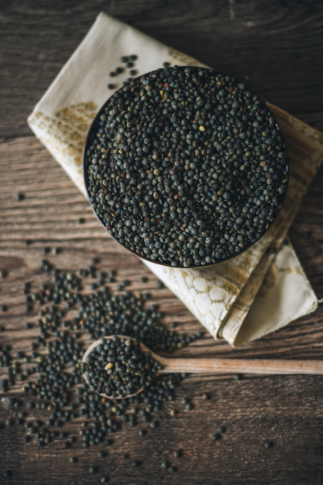
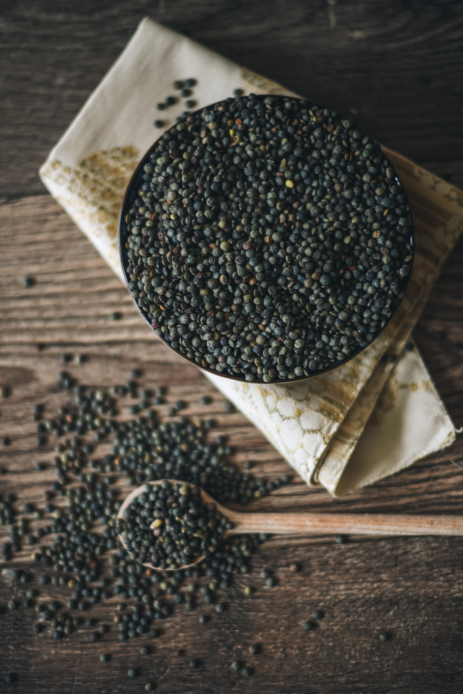
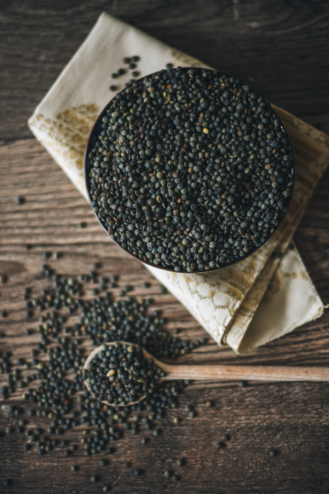

Healthy Middle Eastern Lentil Soup
 



Healthy, Flavorful, and vegan! Packed full of veggies and fragrant spices!
Prep Time: 20 Minutes
Cook Time: 20 Minutes
Yield: 11 cups
Garnishes: drizzle of olive oil, lemon juice, chopped italian parsley or cilantro, diced tomato, diced tomatoes and optional chili flakes (aleppo chili is nice here) and serve with toasty pita bread